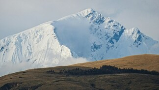

Pérou
Explorez les richesses culturelles et naturelles du Pérou, un pays fascinant où l'histoire ancienne se mêle à la beauté des paysages. Des sommets majestueux des Andes aux mystérieuses lignes de Nazca, en passant par la forêt amazonienne dense et les sites archéologiques incas, le Pérou offre une aventure inoubliable à chaque voyageur.
Que vous soyez un passionné d'histoire en quête de ruines anciennes, un amoureux de la nature désireux d'explorer la biodiversité exceptionnelle de l'Amazonie, ou un gastronome curieux de découvrir les saveurs uniques de la cuisine péruvienne, le Pérou a quelque chose à offrir à chacun. Préparez-vous à être émerveillé par la grandeur des paysages, à vous plonger dans l'héritage culturel riche du pays et à être inspiré par la chaleur et l'hospitalité de ses habitants.
Notre guide complet vous aidera à planifier votre voyage au Pérou en vous fournissant des informations pratiques sur les sites à visiter, les activités incontournables, les conseils de voyage, les formalités administratives et bien plus encore. Laissez-vous emporter par la magie du Pérou et partez à la découverte de ce pays extraordinaire.


10 CONSEILS POUR VOYAGER AU PÉROU

- Prenez votre temps. Prévoyez de passer au moins un mois au Pérou, car il y a beaucoup à voir et à faire. Si le temps vous manque, concentrez-vous sur une ou plusieurs régions du sud du pays, bien que le nord soit moins touristique mais également moins accessible.
- N'hésitez pas à sortir des sentiers battus. Évitez les agences de voyages et explorez plutôt en autonomie. Renseignez-vous sur les collectivos locaux qui desservent les sites que vous souhaitez visiter.
- Ne sous-estimez pas les temps de trajet. Si vous êtes pressé, privilégiez les bus de nuit pour optimiser votre itinéraire. Cependant, gardez à l'esprit que les longs trajets peuvent être fatigants.
- Apprenez les bases de l'espagnol pour faciliter les échanges et les négociations lors de votre séjour.
- Si vous devez passer par Lima, ne prévoyez pas d'y rester longtemps, sauf si nécessaire pour votre itinéraire.
- Préparez-vous à un climat varié. Portez des vêtements en couches pour vous adapter aux variations de température, en particulier lors des nuits froides en altitude.
- Tenez compte de l'altitude dans votre itinéraire. Montez progressivement pour vous acclimater, surtout si vous prévoyez des randonnées en haute altitude.
- Faites au moins une randonnée, de préférence en autonomie, pour éviter les arrêts touristiques et marcher à votre rythme. Vous pouvez trouver des compagnons de randonnée sur des sites comme Backpackmeet. Assurez-vous d'avoir de bonnes chaussures adaptées à la randonnée.
- Prévoyez votre visite du Machu Picchu à l'avance, y compris les transports et l'achat des billets d'entrée. Essayez d'arriver tôt pour éviter les foules et profiter au maximum de l'expérience.
- Goûtez à la cuisine locale en visitant les marchés ou les cantines, mais soyez prudent avec ce que vous mangez et évitez de boire l'eau du robinet. Emportez également une trousse de premiers secours pour les petits problèmes de santé.
Lieux à visiter
Machu Picchu
Perché à plus de 2 400 mètres d'altitude au cœur des Andes péruviennes, le Machu Picchu est l'un des sites archéologiques les plus emblématiques au monde. Cette ancienne cité inca, datant du XVe siècle, est nichée sur un éperon rocheux et offre des vues à couper le souffle sur les montagnes environnantes. Pour y accéder, vous pouvez emprunter le célèbre sentier Inca, qui offre une expérience de trekking inoubliable, ou opter pour le train depuis Cusco. Quelle que soit l'option choisie, la découverte du Machu Picchu reste un moment magique et mystique, imprégné de l'histoire fascinante des Incas.

Trek du Salkantay
Considéré comme l'un des plus beaux treks au monde, le trek du Salkantay vous emmène à travers des paysages époustouflants, des montagnes enneigées aux forêts tropicales luxuriantes. Ce trek alternatif vers le Machu Picchu offre une expérience authentique loin de la foule des sentiers traditionnels. En chemin, vous passerez par des cols spectaculaires, des lacs turquoise et des villages pittoresques. C'est une aventure inoubliable pour les amateurs de randonnée à la recherche de défis et de paysages à couper le souffle.
Cusco
Ancienne capitale de l'Empire inca, Cusco est une ville chargée d'histoire et de charme. Ses rues pavées, ses bâtiments coloniaux et ses vestiges incas en font l'une des destinations les plus fascinantes du Pérou. En explorant Cusco, vous pourrez visiter des sites emblématiques tels que la Plaza de Armas, la cathédrale de Cusco et le quartier de San Blas, connu pour ses artisans et ses galeries d'art. Cusco est également le point de départ idéal pour de nombreuses excursions vers le Machu Picchu et d'autres sites incas.
Trek de Santa Cruz
Le trek de Santa Cruz est l'un des circuits de trekking les plus populaires de la cordillère Blanche, dans les Andes péruviennes. Ce trek offre des vues imprenables sur des sommets enneigés, des vallées verdoyantes et des lagunes cristallines. En chemin, vous passerez par le col de Punta Union, culminant à plus de 4 700 mètres d'altitude, et découvrirez la beauté sauvage de la nature andine. Le trek de Santa Cruz est une aventure inoubliable pour les amoureux de la montagne et de la randonnée.
Trek de l'Alpamayo
Considéré comme l'un des plus beaux sommets du monde, l'Alpamayo est également célèbre pour son trek éponyme, qui attire les randonneurs du monde entier. Ce trek vous emmène à travers des paysages spectaculaires, des glaciers scintillants aux vallées verdoyantes. En chemin, vous aurez l'occasion d'admirer l'impressionnante face nord de l'Alpamayo, souvent surnommée "la plus belle montagne du monde". Le trek de l'Alpamayo est une aventure exigeante mais gratifiante, offrant des vues à couper le souffle et des souvenirs inoubliables.
Llanganuco et Laguna 69
La vallée de Llanganuco, située dans la cordillère Blanche, est réputée pour sa beauté naturelle à couper le souffle. Au cœur de cette vallée se trouve la Laguna 69, l'une des lagunes les plus emblématiques du Pérou. Nichée au pied de majestueux sommets enneigés, cette lagune d'un bleu azur intense est un joyau naturel à ne pas manquer. Pour y accéder, vous pouvez emprunter un sentier de randonnée pittoresque, offrant des vues spectaculaires sur les paysages alentours. La visite de Llanganuco et de la Laguna 69 est une expérience inoubliable pour les amoureux de la nature et de la montagne.
Ile Taquile
L'île de Taquile, située sur le lac Titicaca, est un trésor caché du Pérou. Cette île paisible et préservée est habitée par une communauté indigène qui perpétue des traditions ancestrales uniques. En explorant l'île, vous pourrez admirer ses paysages pittoresques, ses terrasses agricoles en terrasses et ses villages traditionnels aux maisons en pierre. Les habitants de Taquile sont réputés pour leur artisanat exceptionnel, notamment leurs textiles tissés à la main, qui sont inscrits au patrimoine culturel immatériel de l'UNESCO. Une visite de l'île de Taquile offre une immersion authentique dans la culture andine et une expérience de voyage unique au Pérou.

Votre itinéraire type au Pérou
Commencez votre voyage à Lima, la capitale du Pérou. Explorez les quartiers animés de Miraflores et de Barranco, visitez les sites historiques de la Plaza Mayor et du Monastère de San Francisco, et délectez-vous de la délicieuse cuisine péruvienne dans l'un des nombreux restaurants de la ville.
Quittez Lima pour vous rendre à Paracas, une ville côtière réputée pour ses paysages désertiques spectaculaires et sa riche vie marine. Explorez la Réserve Nationale de Paracas, faites une excursion en bateau aux îles Ballestas pour observer la faune locale, et détendez-vous sur les plages de sable blanc.
Continuez votre voyage vers Ica, une ville célèbre pour ses dunes de sable spectaculaires et ses oasis verdoyants. Faites une balade en buggy dans le désert, pratiquez le sandboarding sur les dunes et visitez les vignobles locaux pour déguster le célèbre Pisco péruvien.
Poursuivez votre périple jusqu'à Arequipa, surnommée la "ville blanche" en raison de ses magnifiques bâtiments en pierre volcanique blanche. Explorez le centre historique de la ville, visitez le monastère de Santa Catalina et partez à l'aventure dans le spectaculaire Canyon de Colca pour observer les condors en vol.
Faites un détour par les Salinas Blancas, un paysage lunaire de salines étincelantes situé à proximité d'Arequipa. Promenez-vous au milieu de ces formations éblouissantes et admirez les vues panoramiques sur les montagnes environnantes.
Rendez-vous à Puno, sur les rives du majestueux lac Titicaca, et embarquez pour une excursion vers l'île Taquile. Explorez les traditions culturelles des habitants de l'île, admirez l'artisanat local et profitez des vues imprenables sur le lac et les montagnes environnantes.
Dirigez-vous vers Cusco, l'ancienne capitale de l'Empire inca et une ville impériale pleine de charme. Explorez les rues pavées de la vieille ville, visitez le célèbre site archéologique de Sacsayhuamán et découvrez l'art et l'histoire fascinants de la région dans les musées locaux.
Parcourez la Vallée Sacrée des Incas, une région riche en sites archéologiques, en villages pittoresques et en paysages naturels époustouflants. Visitez les impressionnantes ruines de Pisac et d'Ollantaytambo, découvrez les marchés colorés de Chinchero et de Urubamba, et imprégnez-vous de la culture vivante des communautés locales.
Faites l'expérience de l'incroyable citadelle inca de Machu Picchu, l'une des merveilles du monde antique. Explorez les ruines majestueuses perchées au sommet d'une montagne, imprégnez-vous de l'atmosphère mystique de ce lieu sacré et profitez des vues panoramiques sur les montagnes environnantes.
Terminez votre voyage par une randonnée à Palcoyo, une alternative moins fréquentée aux montagnes arc-en-ciel de Vinicunca. Parcourez des sentiers paisibles à travers les Andes, admirez les impressionnantes formations géologiques et découvrez les magnifiques paysages colorés de cette région spectaculaire.
Types de visas
| Type de visa/autorisation | Durée maximum d’un séjour | Durée de validité | Prix | Prolongation possible |
|---|---|---|---|---|
| Exemption de visa | 90 jours | - | Gratuit | Non |
| Visa d'affaires ou d'études | 1 an | 30 jours | 30 € | Non |
Exemption de visa
Pour un séjour touristique au Pérou ne dépassant pas 90 jours, les ressortissants français, belges, suisses et canadiens n'ont pas besoin de visa. Un passeport en cours de validité, valable au moins 6 mois après la date d'entrée au Pérou, est suffisant.
Théoriquement, la durée maximale du séjour ne doit pas excéder 90 jours calendaires sur une période de 180 jours. Cependant, dans la pratique, si vous souhaitez revenir au Pérou après avoir passé 3 mois ou plus sur les 6 derniers mois, il est peu probable que l'agent à la frontière applique cette restriction.
Depuis l'apparition de la pandémie de Covid-19, le processus d'enregistrement de la date d'arrivée des voyageurs à Lima s'effectue désormais de manière électronique par les douaniers, et il n'y a plus de tampon sur les passeports. Si aucune indication n'est portée sur votre passeport, il est recommandé de vérifier la durée du séjour attribuée par l'agent de l'immigration.
En effet, il arrive parfois que les autorités migratoires n'accordent qu'une autorisation de séjour de 30 ou 60 jours. Si l'agent vous interroge sur la durée de votre séjour, il est conseillé d'indiquer que vous restez 3 mois, ce qui augmentera vos chances d'obtenir plus facilement une autorisation pour 90 jours.
Prolongation d'exemption
Officiellement, il n'est plus possible de prolonger l'exemption de visa.
Cependant, dans la réalité, si vous prévoyez de rester plus de 3 mois au Pérou, vous avez quelques options :
- Quitter le Pérou pendant au moins deux jours, puis y retourner pour négocier une nouvelle exemption de visa à la frontière.
- Dépasser la durée de séjour accordée et payer une amende pour dépassement à votre sortie (4,60 soles par jour de dépassement).
- Essayer de prolonger votre exemption de visa en vous adressant au bureau d'immigration à Lima.
Frais bancaires
Tableau des Frais Bancaires
| Banque | Frais en Soles | Frais en euros | Retrait max. en Soles | Retrait max. en euros |
|---|---|---|---|---|
| Banco de la Nación | Pas de frais | 400 Soles | 101 € | |
| BCP | 36 Soles | 8,87 € | 700 Soles | 177 € |
| Multi Red | Pas de frais | |||
| ScotiaBank (Global ATM Alliance) | 25 Soles (Parfois pas de frais) | 5,40 € | 400 Soles | 101 € |
| Ban Bif | 18 Soles | 4,70 € | 700 Soles | 177 € |
| BBVA | 18 Soles | 4,70 € | 700 Soles | 177 € |
| GlobalNet | 19 Soles | 5,13 € | 400 Soles | 101 € |
| Banco Azteca | 20 Soles | 5,22 € | ||
| Banco GNB | 20 Soles | 5,22 € | 2 000 Soles | 507 € |
| Interbank | 6 Soles | 1,57 € | 2 500 Soles | 634 € |
Nos conseils
- Arriver en Argentine avec des euros, des dollars ou des pesos chiliens et les changer sur place
- Ne pas hésiter à changer vos devises au taux du “blue market” (marché noir), il est beaucoup plus avantageux
- Le bureau de change de la Banco de la Nacion à l’aéroport de Buenos Aires échange les devises sans frais et à un taux intéressant
- Utiliser Western Union (Attention, les petits bureaux de quartiers ou ceux des supermarchés ne traitent pas les gros transferts)
| Maladie | Mode de transmission | Recommandations | Schéma vaccinal adultes | Enfants |
|---|---|---|---|---|
| Hépatite A | Eau et nourriture | Vaccin recommandé à tous les voyageurs. 1 injection au moins 15 jours avant le départ. Rappel recommandé 6 à 12 mois après la première injection. | A partir de 1 an | A partir de 1 an |
| Hépatite B | Voie sexuelle et sanguine | Vaccin recommandé pour des séjours longs ou répétés. 2 injections espacées d’un mois. Un rappel unique 6 mois plus tard. Obligatoire pour les nourrissons depuis 2018. | Varie | Depuis 2018 |
| Rage | Animaux infectés (chiens, chauve-souris…) | Vaccin recommandé aux voyageurs qui prévoient un séjour long ou aventureux et dans des lieux isolés, surtout les jeunes enfants. Le vaccin ne dispense pas d’un traitement curatif à prendre très rapidement en cas d’exposition. Il simplifie juste le traitement. 3 injections : la deuxième 7 jours après la première, la troisième 28 jours après la première. Dès qu’ils marchent. | 3 injections : la deuxième 7 jours après la première, la troisième 28 jours après la première | Dès qu’ils marchent |
| Tuberculose | Voie aérienne | Vaccin BCG recommandé aux enfants en cas de séjours fréquents ou supérieurs à un mois. Elle peut être réalisée jusqu’à l’âge de 15 ans. 1 injection. | 1 injection | Dès la naissance |
| Typhoïde | Eau et nourriture | Vaccin recommandé aux voyageurs en cas de séjour long ou dans de mauvaises conditions. 1 injection 15 jours avant le départ. Durée de protection : 3 ans. | 1 injection 15 jours avant le départ | A partir de 2 ans |
| Fièvre jaune | Moustiques | Vaccin recommandé à tous les voyageurs qui prévoient de séjourner dans les zones considérées à risque. 1 injection 10 jours avant le départ. Durée de protection : à vie (sauf certains cas particuliers). | 1 injection 10 jours avant le départ | A partir de 9 mois (entre 6 et 9 mois dans certains cas particuliers) |
| COVID-19 | Voie aérienne et mains | Tousser ou éternuer dans son coude, éviter de se toucher le visage, respecter un mètre de distance avec les autres, se laver les mains régulièrement, saluer sans serrer la main et éviter les embrassades, porter un masque. Varie selon le type de vaccin. Données indisponible actuellement. | Varie selon le type de vaccin | Données indisponible actuellement |
Contacts utiles
Ambassade du Pérou à Paris
Adresse : 50 avenue Kléber, 75116 Paris
Email : perou.ambassade@amb-perou.fr
Téléphone : 01 53 70 42 00
Horaires d’ouverture : du lundi au vendredi de 9h à 18h
Consulat Général du Pérou à Paris
Adresse : 25 rue de l’Arcade, 75008 Paris
Téléphone : 01 42 65 25 10
Email : portalwebparis@rree.gob.pe
Horaires d’ouverture : du lundi au vendredi de 9h à 14h
Consulat Honoraire du Pérou à Bordeaux
Adresse : 20-22, rue Saint-Rémi, 33000 Bordeaux
Téléphone : 05 56 52 13 10
Email : conperburdeos@wanadoo.fr
Consulat Honoraire du Pérou à Lyon
Adresse : 3 Place de la Bourse, 69002 Lyon
Téléphone : 04 72 60 85 75
Email : xm.consulatperou.lyon@gmail.com
Consulat Honoraire du Pérou à Marseille
Adresse : 1, place Félix Baret, 13006 Marseille
Téléphone : 04 91 04 03 86
Courriel : d.prieur@psavocats.com
Consulat Honoraire du Pérou à Nice
Adresse : 107 quai des Etats-Unis, 06300 Nice
Téléphone : 06 81 08 70 33
Email : consulperounice@gmail.com
Consulat Honoraire du Pérou à Strasbourg
Adresse : 3 quai Rouget-de-Lisle, 67000 Strasbourg
Téléphone : 03 88 21 10 20
Email : atzenhoffer@waxavocs.com
Consulat Honoraire du Pérou à Toulouse
Adresse : 22, rue de la Dalbade, 31000 Toulouse
Téléphone : 07 77 46 50 56
Email : consul_perou_tlse@yahoo.fr